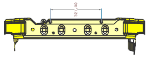
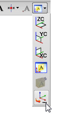
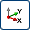
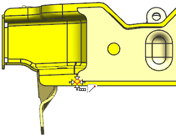
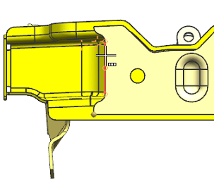
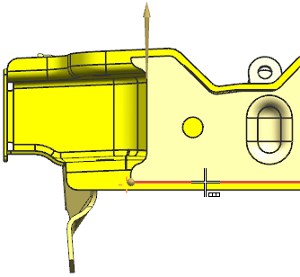
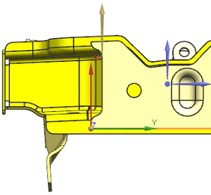

创建用户定义的平面
-
定向您的部件 ，使之与如图所示类似，然后按 F8 键以捕捉至最近的正交视图。

-
在 PMI 工具条上的 PMI 尺寸下拉菜单中，选择水平 尺寸
 。
。 -
在选择条上的基于模型视图的注释平面列表中，选择用户定义的注释平面 。

-
(如果需要)在注释平面警告框中点击确定。
-
在 CSYS 对话框的类型列表中，选择 X 轴，Y 轴，原点 。
-
在选择条上的选择范围列表中，选择整个装配。
也选中捕捉点选项端点。
-
对于原点，选择如图所示的端点。

-
对于 X 轴，在竖直边的上半部选择该边。

-
对于 Y 轴，选择如图所示的边。

方向矢量应该朝向如图所示的方向。

-
如果需要，点击反向 以将矢量方向变为如图所示的方向。
-
点击确定。